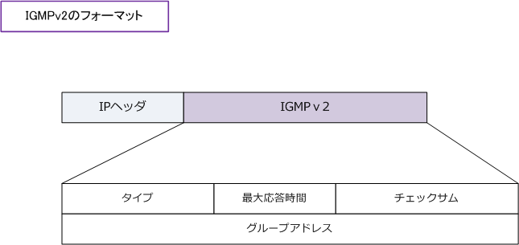
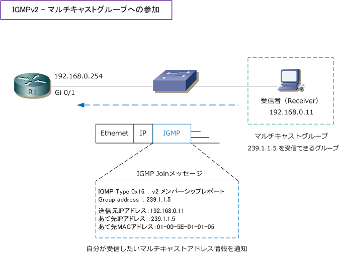
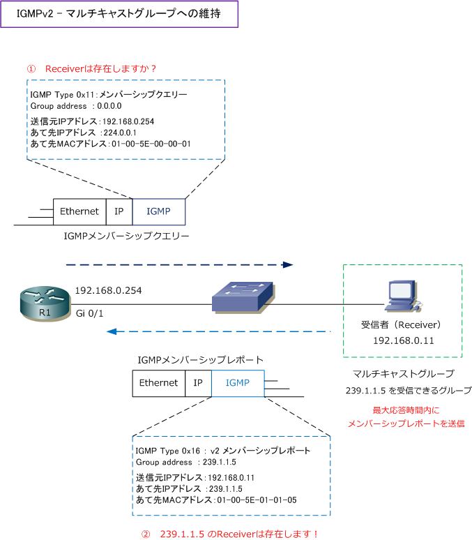
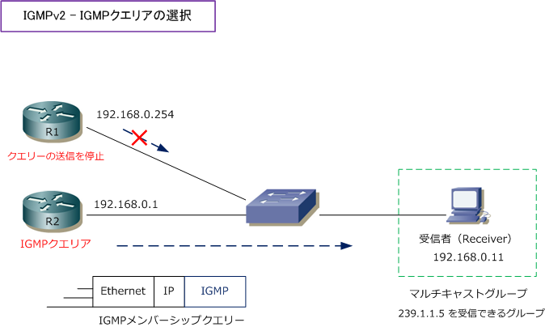
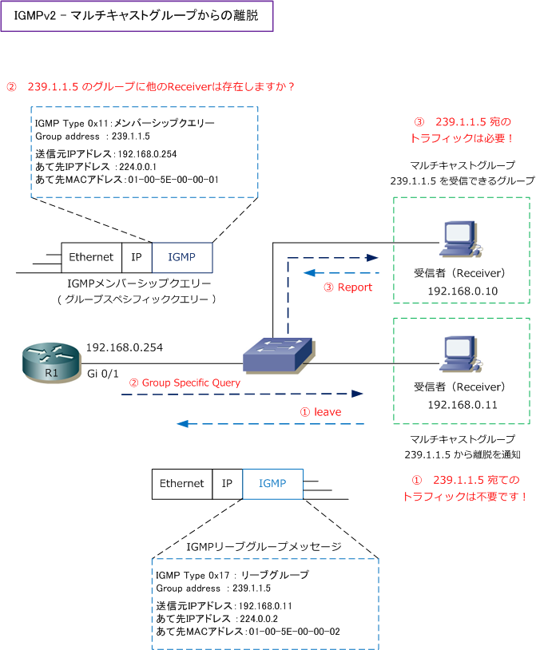

IGMPv2
IGMPv2
IGMPはIPでカプセル化されており、IPプロトコル番号は「2」です。IGMPv2のフォーマットは以下です。

| フィールド | ビット | 内容（ 値 ） |
|---|---|---|
| タイプ | 8ビット | メンバーシップクエリー（ 0x11 ）※1 |
| タイプ | 8ビット | v1 メンバーシップレポート（ 0x12 ） |
| タイプ | 8ビット | v2 メンバーシップレポート（ 0x16 ） |
| タイプ | 8ビット | リーブグループ（ 0x17 ） |
| 最大応答時間 | 8ビット | クエリーを受信後にレポートを返すまでの最大応答時間（100 = 10秒） |
| チェックサム | 16ビット | パケットの完全性を確認するために使用（ 0 ） |
| グループアドレス | 32ビット | ジェネラルクエリーの場合は 0.0.0.0 |
| グループアドレス | 32ビット | グループスペシフィッククエリーと v1/v2 レポートの場合（マルチキャストアドレス） |
※1 メンバーシップクエリーには「ジェネラルクエリー」と「グループスペシフィッククエリー」の2種類があります。
IGMPv1と互換性のあるIGMPv2には、新たな機能として以下の4つが追加されることになりました。
1. クエリインターバルの最大応答時間 2. クエリア選択の概念 3. リーブグループメッセージの定義 4. グループスペシフィッククエリの定義
IGMPv1とIGMPv2の違いが分かるように、マルチキャストグループの参加、維持、離脱の解説を行います。
IGMPv2 - マルチキャストグループへの参加
IGMPv1とIGMPv2ともに、マルチキャストグループへの参加の動作は同じであり、以下の内容となります。
マルチキャストを使用するアプリケーションをインストールしたホストが、Receiverとしてマルチキャスト グループに参加するとします。Receiverは、IGMP（type 0x2：メンバーシップレポート）によりルータに マルチキャストグループの参加を通知します。この時のIGMPは「IGMP Joinメッセージ」とも言われます。
Receiverからのメンバーシップレポートを受信したルータは、自身が管理するIGMPテーブルにその情報を 登録し、そのマルチキャストグループの情報（マルチキャストアドレス）は、マルチキャストルーティング テーブルにも反映（ show ip mrouteで確認可能 ）されることになります。

Ciscoルータでは、IGMPテーブルは以下のようになっています。マルチキャストグループ（239.1.1.5）が 15分03秒の間アクティブ状態であり、残り1分10秒以内にIGMPメンバーシップレポートを受信できないと このエントリが削除されます。239.1.1.5を最後にレポートしてくれたのが192.168.0.11のReceiverです。
R1> show ip igmp groups
IGMP Connected Group Membership Group Address Interface Uptime Expires Last Reporter 239.1.1.5 GigabitEthernet0/1 00:15:03 00:01:10 192.168.0.11
IGMPv1 - マルチキャストグループの維持
IGMPv2では、ルータは定期的（60秒ごと）にIGMPメンバーシップクエリー（ジェネラルクエリー）を 全てのマルチキャストホストを示す 224.0.0.1 宛てに対して送信して、そのセグメント上でReceiverが 存在するかを確認します。つまり、IGMPv1とほぼ同じ動作となります。
IGMPメンバーシップクエリーを受信したReceiverはIGMPメンバーシップレポートで応答します。この 応答は、各マルチキャストグループにつきどれか1つのReceiverがすればOKであり、ルータにとっては Receiverが1つでも存在すれば、そのセグメント上でマルチキャストパケットをフラッディングします。
IGMPv1と異なる点は、IGMPv2の場合はIGMPメンバーシップクエリーを受信してから、デフォルト値で 10秒以内に応答する必要があり、IGMPv2ではこのクエリの最大応答時間を設定変更することが可能です。

IGMPv1と異なる2点目には、IGMPv2ではクエリア（クエリーを送信するルータ）選択の概念があることです。 1つのサブネット上に複数のルータが存在する場合、IGMPv2ではそのサブネット上で最も小さいIPアドレスを 持つルータがIGMPクエリアとなります。初期状態では、自分自身がIGMPクエリアと認識していることから クエリを送信しますが、自分より小さいIPのルータのクエリを受信した場合は、クエリアの動作を停止します。

IGMPv2 - マルチキャストグループからの離脱
IGMPv1と異なる3点目として、IGMPv2では離脱する際にReceiverはルータに離脱することを通知します。 IGMPv2は、マルチキャストグループから離脱時にルータにIGMPリーブグループメッセージを送信します。 離脱したいReceiverは、全てのマルチキャストルータ（224.0.0.2）宛てにIGMPリーブグループメッセージ を送信。これによって離脱遅延が短くなり、意味のないマルチキャストパケットの転送時間も短くなります。
IGMPv1と異なる4点目として、IGMPv2ではグループスペシフィッククエリーの定義が追加されたことです。 これによりルータは、全てのマルチキャストグループではなく、特定のマルチキャストグループにメンバー シップクエリーを送信できるようになりました。IGMPリーブグループメッセージを受信した後、その他にも そのマルチキャストグループのReceiverが存在しないかどうかを確認するために、グループスペシフィック クエリーで確認します。グループスペシフィッククエリーの再送回数は最大で2回となります。

上図では、マルチキャストグループ（239.1.1.5）のReceiver（192.168.0.11）が、IGMPリーブグループ メッセージを送信して離脱の意思を通知しています。その離脱メッセージを受信したルータは、グループ スペシフィッククエリーを送信して、239.1.1.5のグループにて、その他のReceiverが存在しないかどうか を確認しています。最大応答時間内にReceiver（192.168.0.10）がv2メンバーシップレポートを送信した ことから、引き続き 239.1.1.5 宛てのマルチキャストパケットを送信します。なお、最大の応答時間内に 応答がなければ、そのグループにReceiverが存在しないと判断してIGMPテーブルのエントリを削除します。